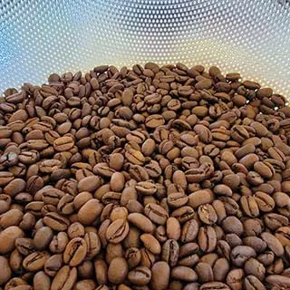

Accordion block demo
Guatemala Huehuetenango Finca Rosma

A flavor compound of dark sugars, oatmeal-raisin cookies, a faint blackberry accent note and acidic impression.
Ethiopia Dry Process Dari Kidame

Fruits are well-integrated into the coffee's sweetness, and acidity is bright for a dry process. Date sugar, orange marmalade, mango, and aromatic cedar.
Colombia Buesaco Alianza Granjeros

Raw demurara sugar sweetness, aromatic butterscotch, hints of apple, golden raisin, orange peel, and elegant citrus acidic impression.